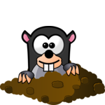
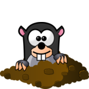

Animacija po fazama¶
Semafor¶
Jedan od najpoznatijih primera uređaja koji radi po fazama je semafor koji reguliše saobraćaj. Na primeru semafora ćemo objasniti rad po fazama i kako možemo da animiramo na računaru događanja koja se odvijaju po fazama.
Postoji nekoliko stanja u kojima semafor može da se nađe. Na primer, može da svetli crveno, da svetli trepćuće žuto, da bude isključen itd. Period u toku kojeg semafor ne menja stanje zvaćemo faza. Pri normalnom radu semafora faze se ciklično smenjuju i svaka faza ima svoje trajanje. Uzmimo kao primer semafor na kome se smenjuju sledeće četiri faze: 1 - crveno svetlo, 2 - crveno i žuto svetlo, 3 - zeleno svetlo, i 4 - žuto svetlo.
Da bi animacija bila jednostavnija, trajanje svake faze ćemo izraziti brojem frejmova (umesto sekundama). Neka su trajanja pomenutih faza \(n_1\), \(n_2\), \(n_3\) i \(n_4\) frejmova redom. Tada ceo ciklus traje \(N = n_1 + n_2 + n_3 + n_4\) frejmova. Od tih \(N\) frejmova, prvih \(n_1\) pripada prvoj fazi, sledećih \(n_2\) drugoj itd.
Da bismo znali kojoj fazi pripada tekući frejm, možemo da uvedemo globalnu promenljivu koja broji frejmove. Pošto ceo ciklus traje \(N\) frejmova, dovoljno je da brojimo po modulu \(N\). To znači da kada brojač frejmova dostigne vrednost \(N-1\), sledeća vrednost je nula (brojimo samo u okviru jednog ciklusa). Pri tome, za vrednosti od 0 do \(n_1 - 1\), frejm pripada prvoj fazi, za vrednosti od \(n_1\) do \(n_1 + n_2 - 1\), drugoj fazi, za vrednosti od \(n_1 + n_2\) do \(n_1 + n_2 + n_3 - 1\) trećoj, a za vrednosti od \(n_1 + n_2 + n_3\) do \(N-1\) četvrtoj.
Evo kako može da izgleda program napisan na osnovu ovog razmatranja:
Zadaci¶

Peta faza: Kopirajte prethodni program, pa ubacite fazu za trepćuće zeleno svetlo posle zelenog, a pre žutog svetla (kao u primeru - dugme „Prikaži primer”).
Pomoć: U petoj fazi nećemo imati jedan poziv funkcije crtaj_semafor, nego deo koda koji otprilike izgleda ovako:
if i_frejm % 2 == 0:
crtaj_semafor(...)
else:
crtaj_semafor(...)
Avion: Napišite program koji radi kao u primeru (dugme „Prikaži primer”).
Opis kretanja: avion polazi sa sredine leve ivice prozora. Kreće se prvo 20 frejmova po 2 piksela desno i gore, zatim 20 frejmova po 2 piksela desno i dole. Kada izađe kroz desnu ivicu prozora, pojavljuje se na istoj visini sa leve strane. Brzina prikazivanja je 50 frejmova u sekundi.


Krtica: Napišite program koji radi kao u primeru (dugme „Prikaži primer”).
Učitava se 10 slika na kojima krtica redom sve više viri iz rupe. Ciklus ima četiri faze, koje zajedno traju 28 frejmova.
Prva faza traje 10 frejmova i tokom nje krtica izlazi iz rupe (prikazuju se redom slike od prve do desete).
Druga faza traje 5 frejmova i tokom nje krtica je u najvišem položaju (prikazuje se deseta slika).
Treća faza traje 10 frejmova i tokom nje krtica ulazi u rupu (prikazuju se slike od desete do prve).
Četvrta faza traje 3 frejma i tokom nje krtica je u rupi (prikazuje se prva slika).
{kind=link}
{kind=link}


 

{kind=link}